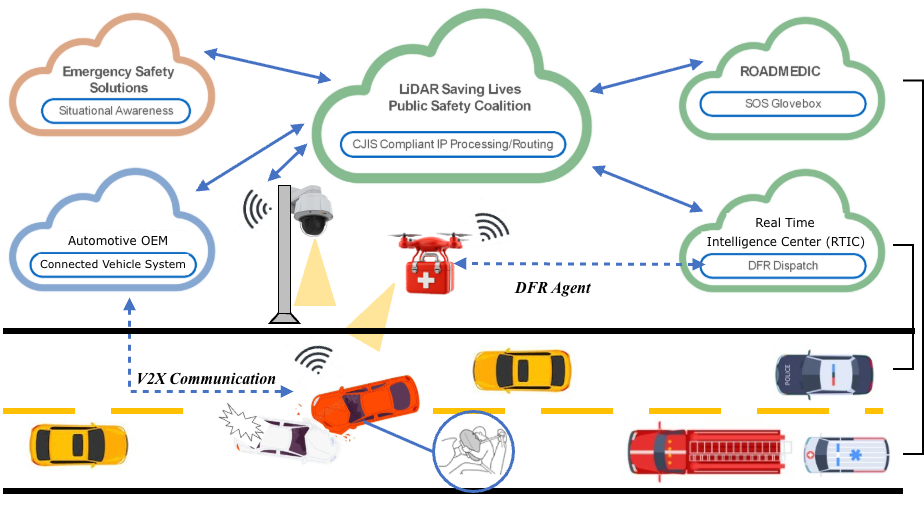

Next-Generation AI-Driven Post-Crash Care Platform with Drones as First Responders
From airbag deployment to a drone overhead in seconds, not minutes. We are building and piloting a connected emergency-response pipeline in Riverside, California.
Many crash victims survive the initial impact but lose critical minutes before help is even notified. Emergency notification today still depends on a witness or occupant calling 9-1-1, or on a telematics call center relaying information by voice to a Public Safety Answering Point. Each hand-off adds delay at exactly the moment when faster care saves lives.
At the same time, police departments across the country are standing up Real Time Intelligence Centers (RTICs) and Drone First Responder (DFR) programs, but these systems are not yet connected to the crash data that modern vehicles already produce.
ConnectedAirbag closes that gap. Led by the University of California, Riverside with the City of Riverside and industry partners, it builds a scalable, interoperable digital infrastructure that turns a vehicle's airbag deployment directly into an automated emergency response, with a drone launched to the scene within seconds of detection.

Four integrated components, each mapping to a critical layer of the emergency response workflow.
Ingests real-time crash telemetry and airbag deployment data from connected vehicles and edge sensing, and uses AI to assess crash severity, location, occupant risk, and incident context.
Delivers crash intelligence into Next-Generation 9-1-1 and Real Time Intelligence Centers over a standardized IP-based architecture, with "single pane of glass" operational dashboards.
Launches drones within seconds of crash detection for aerial situational awareness, scene video, hazard assessment and officer safety, and delivery of trauma kits and pre-hospital blood.
Modernizes computer-aided dispatch (CAD) for AI-assisted incident creation, automated prioritization, and coordination between the RTIC and responders in the field.
Development starts with a single drone and vehicle and grows into a small-scale pilot with at least three drones and three connected vehicles from UCR and partner automakers. Every component moves through four phases.
System requirements, interfaces, and end-to-end architecture.
Platform build-out and integration across vehicles, 9-1-1, RTIC, CAD, and drones.
Field demonstration and testing in Riverside, California.
Measured benefits, best practices, and a model for nationwide deployment.
The team spans the full crash response workflow, from the vehicle to the 9-1-1 center to the drone in the air.